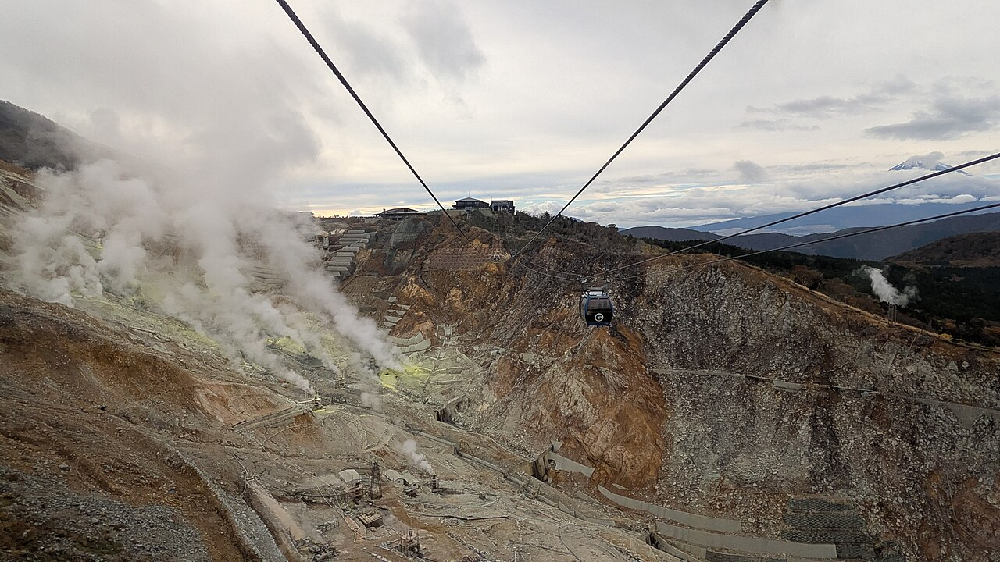

Hakone from Tokyo · 5-day family itinerary
Four nights in Gora with the bags sent ahead, one museum day, one day for the ropeway-and-pirate-ship loop, and a lake day kept next to it so the two can swap if wind or volcanic gas stops the ropeway.

Photo: Joli Rumi, A view of Owakudani and ropeway, Hakone, Japan, CC BY-SA 4.0, via Wikimedia Commons.

Checked before you commit
This illustrative route takes the Odakyu Romancecar from Shinjuku, spends four nights in Gora at the top of the Hakone Tozan Railway, and keeps the ropeway loop and a bus-and-boat lake day side by side so they can trade places. Odakyu’s Hakone Freepass and Romancecar pages, Hakone Navi’s transport, station, ropeway, luggage and FAQ pages, the ropeway’s maintenance and volcanic-gas notices, the Japan Meteorological Agency’s Hakone page, Kanagawa Prefecture’s Owakudani page, and the pages of the Hakone Open-Air Museum, Hakone Gora Park and Hakone Checkpoint were checked against official pages on 21 October 2026. Nothing was booked.
Day 1 rides the Romancecar to Hakone-Yumoto, sends the bags ahead and climbs the Tozan Railway to Gora. Day 2 stays one stop down at the Open-Air Museum. Day 3 is the loop: cable car, ropeway via Owakudani to Togendai, boat to Moto-Hakone, bus back through Miyanoshita. Day 4 reaches Lake Ashi’s south shore by bus and returns by the old Tōkaidō road. Day 5 sends the bags back and rides the Romancecar to Shinjuku.
One anchor a day for a ten-year-old and a seven-year-old, with one base for all four nights so nobody repacks. The loop day is the long one, so the day before it ends early and the decision about tomorrow is made at dinner. Hakone Navi says Lake Ashi and Owakudani run about 3 to 4°C cooler than lower areas such as Hakone-Yumoto, so pack a layer.
The Romancecar seats, the Gora hotel, the luggage service and any Craft House session were not checked for your dates. Yen figures are the 2026 prices on the official pages and are not converted. A booking-hub link is intent only. It doesn’t hold a seat or a room.
Planning boundary: dates are illustrative. The worked example runs Monday 18 to Friday 22 October 2027. On 21 October 2026, the Japan Meteorological Agency kept Hakone at volcanic alert Level 1, where it has been since 7 October 2019. Kanagawa Prefecture’s Owakudani page (updated 27 May 2026) listed no volcanic restrictions on the ropeway, but the ropeway publishes a live gas reading and says gas levels are not directly linked to the alert level, and the guided walk into Owakudani’s fumarole field was cancelled for every session that day. Planned ropeway works close Owakudani–Sōunzan from 7 to 24 December 2026 and Togendai–Owakudani from 12 January to 26 February 2027, with replacement buses. Alfred does not check ropeway status, volcanic gas or bus times while it writes the day. Book opens a partner checkout. It does not prove a booking exists.
Route and family-coordination brief
Party: two adults, one ten-year-old and one seven-year-old. Base: four nights in Gora. Pace: moderate, one anchor a day. Budget input: Mid Range. Published fares and fees appear only where an official page states them; nothing is totalled as a family quote.
Getting around: the Romancecar runs direct from Shinjuku to Hakone-Yumoto in about 80 minutes. From there the Hakone Tozan Railway climbs to Gora in about 40 minutes, and Gora is the foot of the cable car to Sōunzan and the ropeway. Hakone Navi, the Odakyu Hakone Group’s official site, shows live status for the train, cable car, ropeway, boats and Hakone Tozan buses. It covers only the Odakyu-affiliated lines.
The Hakone Freepass gives unlimited rides on eight kinds of transport in its area, free entry to Hakone Gora Park and discounts at about 70 places. It lasts two or three calendar days, not hours: Odakyu counts the day you buy it as day one. The 2026 price from Shinjuku was ¥7,100 for adults and ¥1,600 for children over two days, and the Hakone-area version ¥6,000 and ¥1,500. Children under 6 need no ticket.
Gora Station sells the pass, but we did not confirm which version, so a three-day pass from Day 2 to Day 4 is our suggestion, not a tested price.
Day 1 — Romancecar to Hakone-Yumoto, bags sent ahead, Gora Park in the afternoon
Take the Odakyu Romancecar from Shinjuku to Hakone-Yumoto, about 80 minutes. Every seat is reserved, and the limited express ticket is bought on top of the ordinary fare (in 2026, ¥1,200 for adults and ¥600 for children aged 6 to 11, one way). Choose a train that reaches Hakone-Yumoto well before noon.
At the Hakone Luggage Transport Service counter inside Hakone-Yumoto Station, hand over the suitcases. It takes bags from 8.30 am to 12.00 for same-day delivery, and they reach the hotel after 3 pm. It delivers only to partner hotels, charges ¥1,500 a piece for regular size (up to 140 cm and 15 kg), and won’t take prams or strollers. The ropeway doesn’t take large luggage either, so this one step keeps Day 3 possible.
Ride the Hakone Tozan Railway up to Gora, about 40 minutes, with switchbacks on the steep section. After lunch, walk five minutes to Hakone Gora Park, Japan’s oldest French-style park, open 9 am to 5 pm (last entry 4.30). Under-12s are free. At the Craft House, lampwork glass beads (from age 6) go home with you; blown glass and ceramics are posted later.
Fallback: if the Romancecar runs late and you miss the noon cut-off, keep the bags with you and go straight to the hotel. Gora Park allows re-entry the same day or the next, so it can wait until tomorrow afternoon.
Live-check: Romancecar seats for your date; whether your hotel is a luggage-service partner; Craft House bookings (recommended in advance) and whether posted pieces go overseas; the park has steep slopes and stairs, hard with a pram.
Day 2 — The Hakone Open-Air Museum, one stop down the hill
Take the Tozan Railway one stop down to Chōkoku-no-Mori for the Hakone Open-Air Museum, open 9 am to 5 pm every day (last entry 4.30). About 120 sculptures sit on roughly 70,000 square metres of garden. Same-day tickets in 2026 were ¥2,000 for adults and ¥800 for primary-school children; online tickets were ¥1,800 and ¥600, and preschool children are free. Prams can be borrowed free.
For the children, the anchor is Woods of Net, a climbable crocheted net inside a timber dome. Only children aged 12 and under go in, shoes come off, and it closes in poor weather. Finish at the forest footbath, then take the train back up for an afternoon at the hotel.
In the evening, look at tomorrow’s forecast and the Hakone Navi transport page. Decide tonight whether Day 3 and Day 4 swap.
Fallback: if rain closes Woods of Net, keep the indoor Picasso Pavilion and the stained-glass Symphonic Sculpture, and leave early.
Live-check: the museum’s notices for temporary closures in typhoons or heavy snow; ticket prices for 2027; the wind and thunder forecast for tomorrow.
Day 3 — The loop: cable car, ropeway over Owakudani, pirate ship to Moto-Hakone
Leave Gora on an early cable car up to Sōunzan so you reach the ropeway as it opens at 9 am (it runs 9 am to 5 pm from February to November). Each of its three sections takes about 10 to 15 minutes, and you change gondolas at Owakudani. Between Sōunzan and Owakudani the cabin passes about 130 metres above the valley floor. On a clear day, Mt Fuji shows between Ubako and Owakudani.
At Owakudani, the Earth Valley area’s circular wind terrace suits small children, and the glass-floored deck sits 8 metres up, over the steam. Black eggs are sold at the Owakudani Kurotamagokan. OWAKUDANI KITCHEN on the station’s second floor serves curry from 10.30 am to 4 pm. Skip the guided walk into the steaming valley: its explanations are in Japanese, and every session on 21 October 2026 was called off for safety reasons.
Ride on to Togendai, then take the Hakone Sightseeing Cruise to Moto-Hakone, about 25 to 40 minutes. Walk 10 minutes to Hakone-jinja and its lakeside torii. Home is the Hakone Tozan bus from Moto-Hakone platform 1, through Kowakien to Miyanoshita, and the Tozan Railway back up to Gora. The operator warns that evening buses often run late.
Fallback: if the ropeway is suspended in the morning, do Day 4 today and the loop tomorrow. If it stops once you are at Togendai, platform 1 there has a Hakone Tozan bus to Hakone-Yumoto through Sengoku and Miyanoshita. If the boat isn’t running, the Odakyu Highway Bus W route crosses the lake, but with few departures.
Live-check: the ropeway status and volcanic-gas reading on Hakone Navi before you leave; the ropeway’s notice that people with asthma, lung or heart conditions or a pacemaker must not ride to Owakudani, and that families with small children should think it through; wind, thunder and typhoon warnings.
Day 4 — Lake Ashi’s south shore by bus, home by the old Tōkaidō road
Ride the Tozan Railway down to Miyanoshita and an H-route Hakone Tozan bus to Lake Ashi, getting off at Onshi-kōen-mae for Onshi-Hakone Park. It was an imperial summer villa, built in 1886, and the balcony of its Lakeside Observation Building looks over Lake Ashi to Mt Fuji on a clear day.
A short bus ride on is Hakone Checkpoint, the rebuilt Edo-period inspection post, open 9 am to 5 pm (4.30 from December to February; last entry 30 minutes before). Entry in 2026 was ¥500 for adults and ¥250 for children, or ¥400 and ¥150 with a Hakone Freepass. It is a five-minute walk from Hakonemachi-ko.
In the afternoon, take the K-route Hakone Tozan bus from Moto-Hakone towards Hakone-Yumoto and get off at Amazake-chaya. The tea house on the old Tōkaidō road dates back about 400 years. Its amazake is non-alcoholic and, the tea house says, contains no sugar. There is a tatami room for tired legs. Carry on to Hakone-Yumoto and ride the Tozan Railway back up to Gora.
Fallback: this is the swap day. If you did the loop on Day 3, keep it as planned. In heavy rain, drop Onshi-Hakone Park and keep the Checkpoint and the tea house.
Live-check: Amazake-chaya’s opening hours and closing days (not found on the pages we opened); bus times on Hakone Navi; road congestion around the lake in the late afternoon.
Day 5 — Bags to the station, Romancecar back to Shinjuku
Hand the suitcases to the hotel’s front desk by 10 am for the Hakone Luggage Transport Service; they can be collected at Hakone-Yumoto Station from 1.30 pm to 6.30 pm. Spend the morning at the hotel, then ride the Tozan Railway down. Buy a bento at the Hakone-no-ichi shop in the station for the train.
Take an afternoon Romancecar to Shinjuku, about 80 minutes. The timetable in force from 14 March 2026 listed several afternoon departures from Hakone-Yumoto every day. Book seats ahead, since every seat is reserved.
Fallback: if the Romancecar is full, regular Odakyu trains run from Odawara to Shinjuku without a reserved seat; the Tozan Railway connects Hakone-Yumoto with Odawara.
Live-check: the return luggage service is booked only through your hotel (no online booking); the 2027 Romancecar timetable and seat availability; your onward flight times.
Planning notes
Dates are illustrative. At decision time, recheck the Hakone Navi status page, the ropeway’s gas reading and maintenance notices, the Japan Meteorological Agency’s alert for Hakone, Romancecar seats, the luggage service’s partner list and hours, and each attraction’s opening times. A travelling profile is required, and the adults, children and ages Alfred plans for come from the travellers on that profile.
On web Lets Go, Holiday takes origin, destination, dates, a budget step and a day pace, then Plan my trip queues the itinerary. Moderate day pace fills a morning and an afternoon slot, with lunch and dinner. The Estimated costs bar, when it appears, is a rounded median of flight-and-hotel packages, not a quote.
While the trip is still Planning, you can keep or change the hotel and then the flights Alfred picked. Holiday takes one destination; Multi-city can hold Tokyo and Hakone only if both are picked from city search, which we did not test.
Once the trip is ACTIVE, you can edit an item’s title, times and notes, so “Ropeway loop — check Hakone Navi at 7.30; if suspended, swap with Thursday” can sit on the card. In Hey Alfred you can ask to swap two full days, and you confirm before it is applied. Book opens a partner checkout for flights and hotels, activities, eSIMs and travel insurance. It doesn’t check ropeway status, volcanic gas or bus times.
Plan a trip
Start with your people, dates and pace, then review the editable plan before booking.
Plan a trip